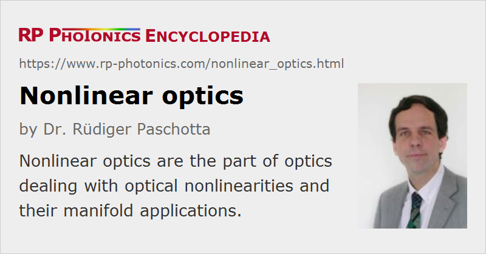

Nonlinear Optics
Definition: the part of optics dealing with optical nonlinearities and their applications
More general term: optics
Opposite term: linear optics
German: nichtlineare Optik
How to cite the article; suggest additional literature
Author: Dr. Rüdiger Paschotta
Nonlinear optics is a part of optics, dealing with various kinds of optical nonlinearities e.g. in nonlinear crystal materials or optical fibers. Nonlinear effects with light are those where e.g. twice the optical input intensities does not simply result in twice the output intensities. For low optical intensities, nonlinear effects become very weak. See the article on nonlinearities for more details and examples.
For applications, a field of particular importance is nonlinear frequency conversion, dealing with the generation of new optical frequencies in nonlinear processes. Another wide area is concerned with the effects of optical nonlinearities in various situations, e.g. for the propagation of intense ultrashort pulses in optical fibers, in supercontinuum generation, or for optical signal processing.
Nonlinear fiber optics does partly deal with nonlinear frequency conversion (e.g., with supercontinuum generation and fiber-optical parametric oscillators), but also with other uses of fiber nonlinearities – for example, with nonlinear amplification and signal processing.
Nonlinear interactions are also very important for many experiments in quantum optics.
Questions and Comments from Users
Here you can submit questions and comments. As far as they get accepted by the author, they will appear above this paragraph together with the author’s answer. The author will decide on acceptance based on certain criteria. Essentially, the issue must be of sufficiently broad interest.
Please do not enter personal data here; we would otherwise delete it soon. (See also our privacy declaration.) If you wish to receive personal feedback or consultancy from the author, please contact him e.g. via e-mail.
By submitting the information, you give your consent to the potential publication of your inputs on our website according to our rules. (If you later retract your consent, we will delete those inputs.) As your inputs are first reviewed by the author, they may be published with some delay.
Bibliography
| [1] | R. H. Stolen, “The early years of fiber nonlinear optics”, J. Lightwave Technol. 26, 1021 (2008) |
| [2] | G. P. Agrawal, “Nonlinear fiber optics: its history and recent progress”, J. Opt. Soc. Am. B 28 (12), A1 (2011), doi:10.1364/JOSAB.28.0000A1 |
| [3] | E. Garmire, “Nonlinear optics in daily life”, Opt. Express 21 (25), 30532 (2013), doi:10.1364/OE.21.030532 |
| [4] | R. L. Sutherland, Handbook of Nonlinear Optics, 2nd edn., Marcel Dekker, New York (2003) |
| [5] | R. W. Boyd, Nonlinear Optics, Academic Press, 2nd edn., CRC Press, Boca Raton, FL (2003) |
| [6] | G. P. Agrawal, Nonlinear Fiber Optics, 4th edn., Academic Press, New York (2007) |
| [7] | A. V. Smith, SNLO software for simulating nonlinear frequency conversion in crystals, free download, http://www.as-photonics.com/snlo, from AS-Photonics |
| [8] | A. V. Smith, Crystal nonlinear optics with SNLO examples, ISBN 978-0-692-40044-9, http://www.as-photonics.com/products/crystal-nonlinear-optics-book |
See also: nonlinearities, nonlinear polarization, nonlinear crystal materials, nonlinear frequency conversion, supercontinuum generation, quantum optics, fiber optics
and other articles in the category nonlinear optics
|  |
If you like this page, please share the link with your friends and colleagues, e.g. via social media:
These sharing buttons are implemented in a privacy-friendly way!